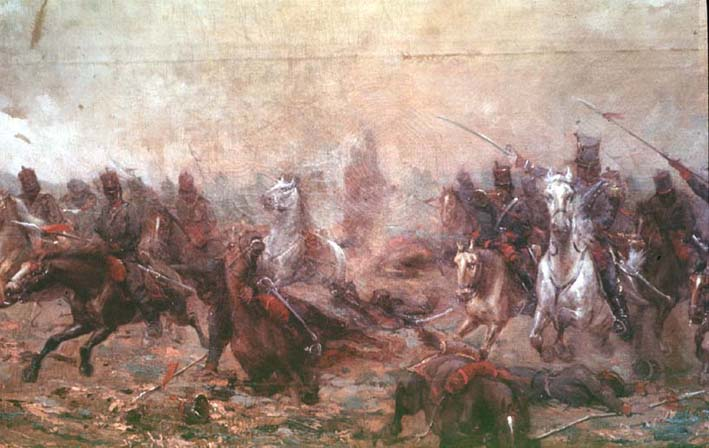

|
|  |
|
Angel Della Valle, Carga de granaderos
|
Della Valle also exploited the contemporary upsurge of interest in, and state-sponsored cult of, the wars of independence as a founding epic of the nation. The battle scene crafts a historical sublime: history –the narrative of the origins of the nation– occurs in a temporality of turmoil and passion, to be looked at with devotion from the other side of the canvas and to be studied and admired in the classroom and the university lecture theatre (a course in Argentine history was implemented at the University of Buenos Aires by Miguel Cané in 1878). The representation of history, in fact, confirms its pastness, its character of an origin from which the beginning of historiographical time, the time of the state, derives its legitimacy precisely because it has mastered and contained it. The invocation of violent origins –of an origin in violence– is thus simultaneously a de- and a re-centering of the present of the state.
|